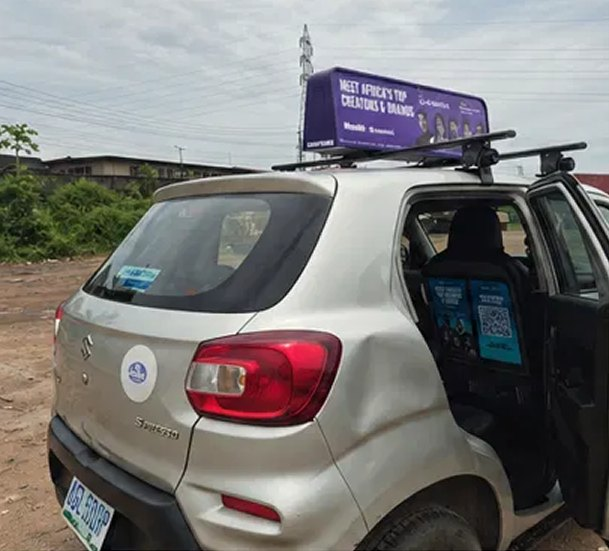
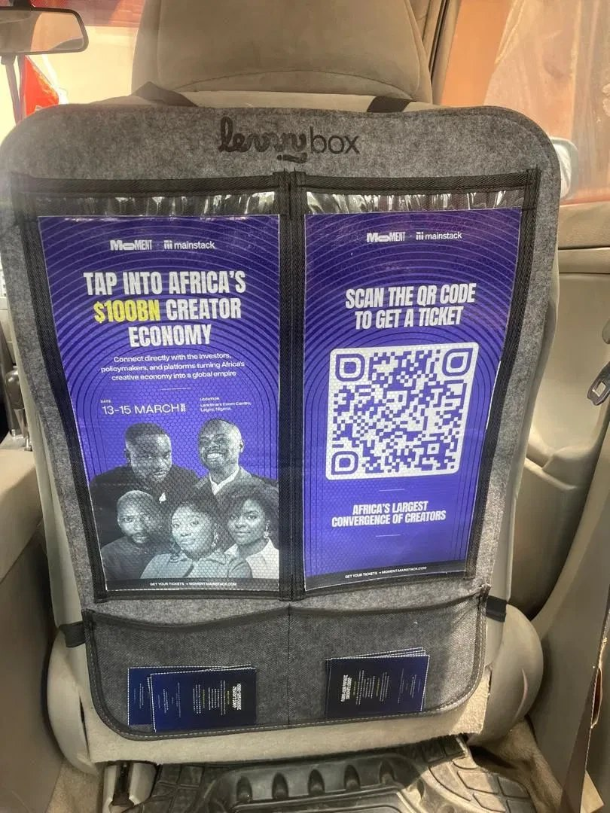
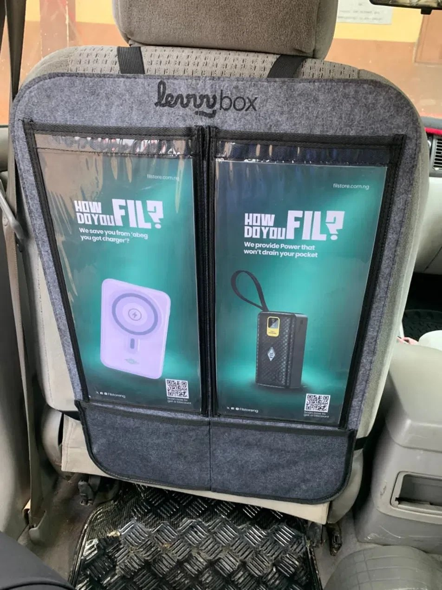

Led fleet and field operations for mobile advertising campaigns — driver onboarding, route compliance, performance tracking and vehicle-maintenance coordination across a 100-vehicle fleet.
Lead driver onboarding, route compliance, performance tracking and vehicle-maintenance coordination across 100+ drivers and 100 vehicles.
Own end-to-end delivery of mobile advertising campaigns: rollout, branding installation, GPS verification, media documentation and proof-of-execution reporting, up to 32 placements each.
Coordinate 5 field and installation team members and resolve real-time issues — accidents, route deviations, delays — with around 10 incidents handled.
Batched panels for drivers heading to similar locations and centralised records in Excel and Notion, cutting distribution errors and improving visibility.
Built 8+ operational documents, workflows and tracking systems spanning execution, driver ops, handovers, reporting and continuity.
Vehicle allocation and driver briefing.
Branding installation on the assigned vehicles.
Route compliance and GPS verification.
Media documentation from the field.
Proof of execution and reporting.


